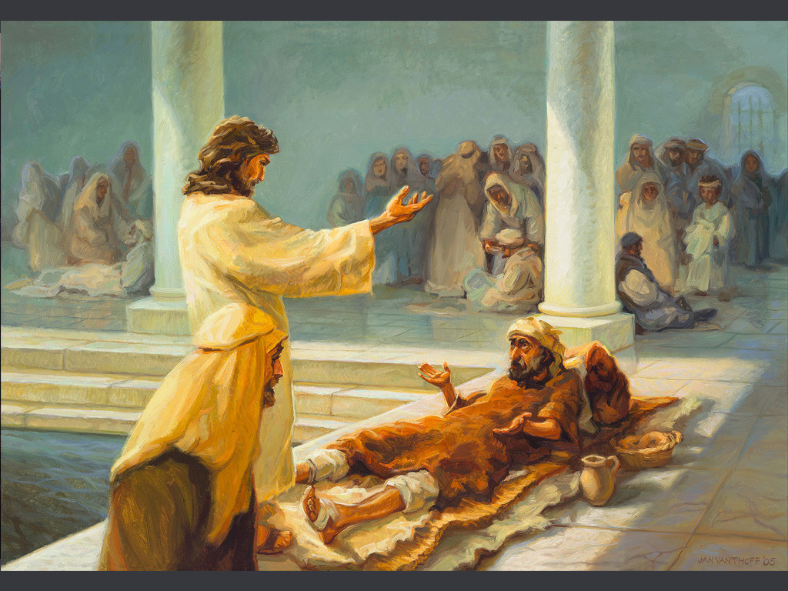
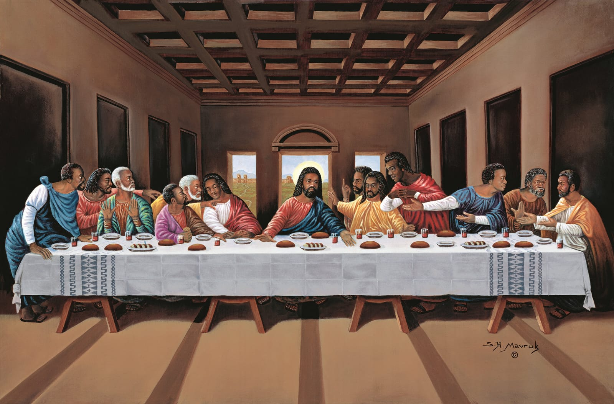

This website is a humble tribute to Jesus Christ, the Savior who brought light, love, and salvation to the world.
Explore His life, teachings, miracles, and the ultimate sacrifice He made for humanity.
"I am the way, the truth, and the life." – John 14:6
About Jesus Christ
Jesus Christ, born in Bethlehem over 2,000 years ago, is the central figure of Christianity.
Believed to be the Son of God and the promised Messiah, He lived a life of humility, love, and service.
His life and teachings have profoundly shaped history, culture, and faith across the world.He a central figure in Christianity. He is believed by Christians to be the Son of God and the savior of humanity. According to the Bible, Jesus was born in Bethlehem, preached about God's love and forgiveness, performed miracles, and was crucified and resurrected.
"The Word became flesh and made His dwelling among us." – John 1:14
Teachings of Jesus
Jesus' teachings, as recorded in the New Testament, emphasize love, compassion, and forgiveness. Some key teachings include:
Love and Compassion
Love your neighbor: Jesus taught that loving your neighbor as yourself is a fundamental commandment (Mark 12:31).
Love your enemies: He also taught that loving your enemies and praying for those who persecute you is essential for spiritual growth (Matthew 5:44).
Forgiveness
Forgive others: Jesus emphasized the importance of forgiving others, stating that forgiveness is essential for receiving forgiveness from God (Matthew 6:14-15).
Turn the other cheek: He taught that responding to violence with non-violence and turning the other cheek is a powerful way to show love and forgiveness (Matthew 5:39).
Spiritual Growth
Seek first the Kingdom: Jesus taught that seeking God's Kingdom and righteousness should be the top priority in life (Matthew 6:33).
Humility and service: He emphasized the importance of humility and serving others, stating that true greatness comes from serving others (Mark 9:35).
Other Key Teachings
The Golden Rule: Jesus taught that treating others as you want to be treated is a fundamental principle for living (Matthew 7:12).
Faith and trust: He emphasized the importance of having faith and trust in God, stating that even small faith can move mountains (Matthew 17:20).
These teachings have had a profound impact on Christianity and continue to inspire people around the world.
"Love your neighbor as yourself." – Matthew 22:39
Miracles of Jesus
The miracles of Jesus, as recorded in the New Testament, demonstrate his divine power and compassion. Some notable miracles include:
Healing Miracles
Healing the blind man: Jesus healed a blind man, restoring his sight (John 9:1-41).
Healing the leper: He healed a leper, cleansing him of his disease (Matthew 8:1-4).
Healing the paralytic: Jesus healed a paralytic man, forgiving his sins and restoring his physical health (Mark 2:1-12).
Nature Miracles
Calming the storm: Jesus calmed a storm on the Sea of Galilee, demonstrating his authority over nature (Mark 4:35-41).
Feeding the 5,000: He fed a large crowd of people with just five loaves of bread and two fish (John 6:1-14).
Raising the Dead
Raising Lazarus: Jesus raised Lazarus from the dead, demonstrating his power over death (John 11:1-44).
Raising the daughter of Jairus: He raised the daughter of Jairus from the dead, restoring her life (Mark 5:21-43).
Other Miracles
Turning water into wine: Jesus turned water into wine at a wedding in Cana, demonstrating his divine power (John 2:1-11).
Walking on water: He walked on water, demonstrating his authority over nature (Matthew 14:22-33).
These miracles showcase Jesus' compassion, power, and divinity, and are an integral part of the Christian faith.
"He got up, rebuked the wind and said to the waves, 'Quiet! Be still!'" – Mark 4:39
The Sacrifice of Jesus
The sacrifice of Jesus is a central tenet of Christianity, representing the ultimate act of love and redemption. According to Christian belief:
The Purpose of Jesus' Sacrifice
Atonement for sin: Jesus' sacrifice was to atone for the sins of humanity, providing a way for people to be reconciled with God.
Demonstration of love: His sacrifice demonstrated the depth of God's love for humanity, showing that God was willing to go to great lengths to save humanity.
The Significance of Jesus' Sacrifice
Redemption: Jesus' sacrifice provided redemption for humanity, offering forgiveness and salvation to all people.
New covenant: His sacrifice established a new covenant between God and humanity, one based on grace and faith rather than works and law.
The Impact of Jesus' Sacrifice
Salvation: Jesus' sacrifice offers salvation to all people, providing a way for them to be forgiven and reconciled with God.
Hope and transformation: His sacrifice brings hope and transformation to people's lives, offering a new perspective and a fresh start.
Christian Perspective
Faith in Jesus: Christians believe that faith in Jesus and his sacrifice is the key to salvation and eternal life.
Gratitude and worship: Many Christians express gratitude and worship for Jesus' sacrifice, recognizing the depth of his love and sacrifice.
The sacrifice of Jesus is a profound and complex topic that has been explored and celebrated by Christians for centuries.
"For God so loved the world that He gave His one and only Son." – John 3:16
Gallery


Contact Us
Share your thoughts, prayers, or reflections about Jesus Christ.
We’d love to hear how His teachings have touched your life.